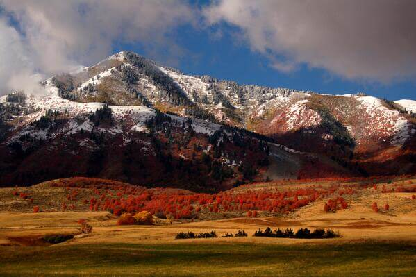

Preston, Idaho - Cache Mountains
If you are looking for a nice hike in Preston Idaho, look no further than the beautifuul Cache mountains. These immense , beautiful mountains are the best place to hike and camp by yourself, with friends and with family. Before you go, remember to check the forecast! The great thing about the Cache mountains is that is has many great trails you can take by day for sight seeing. It really is a sight to behold. There is alot of amazing views to see. The sunsets there are always stunning as well as sunrises. Many photographers go down popular trails to take pictures.